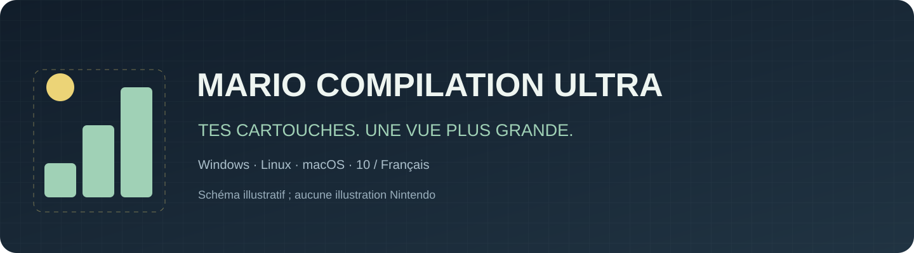
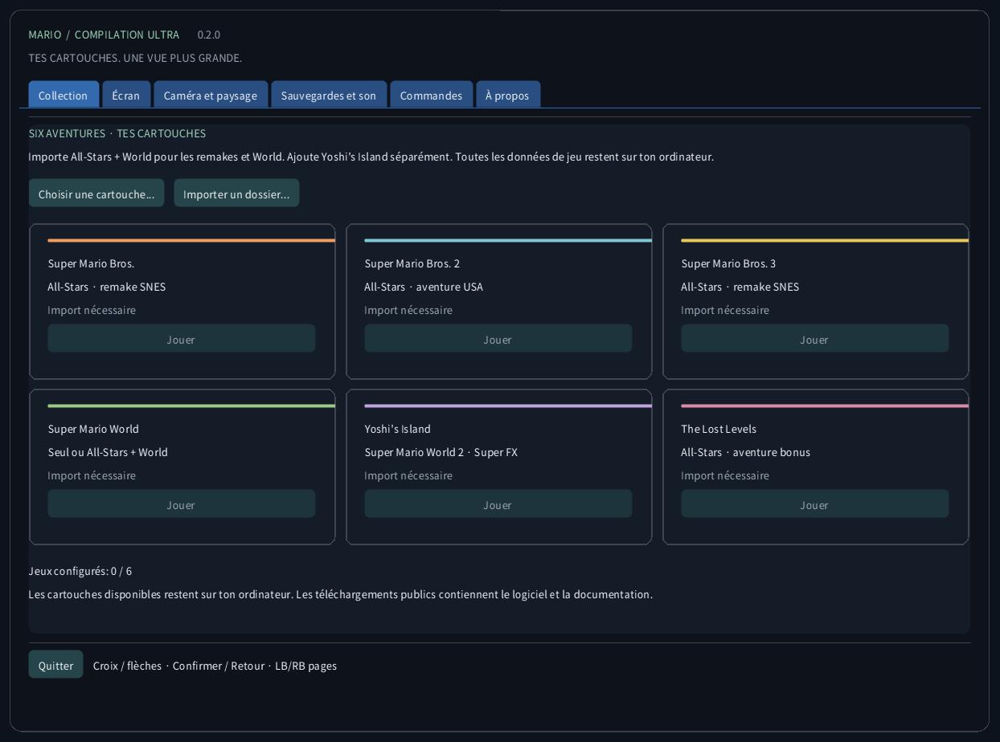
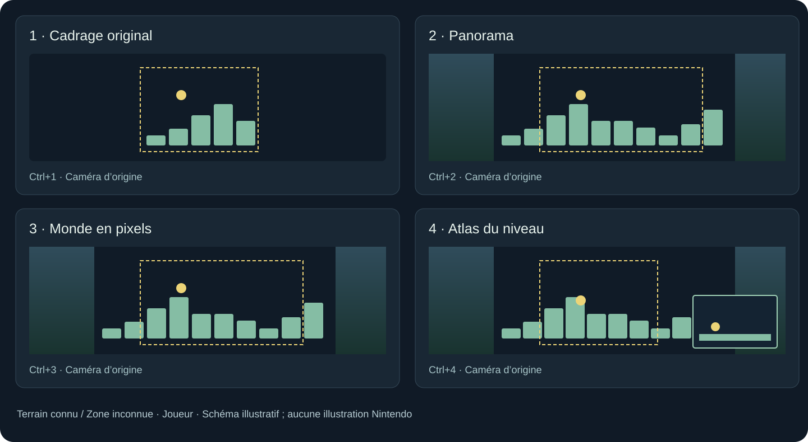
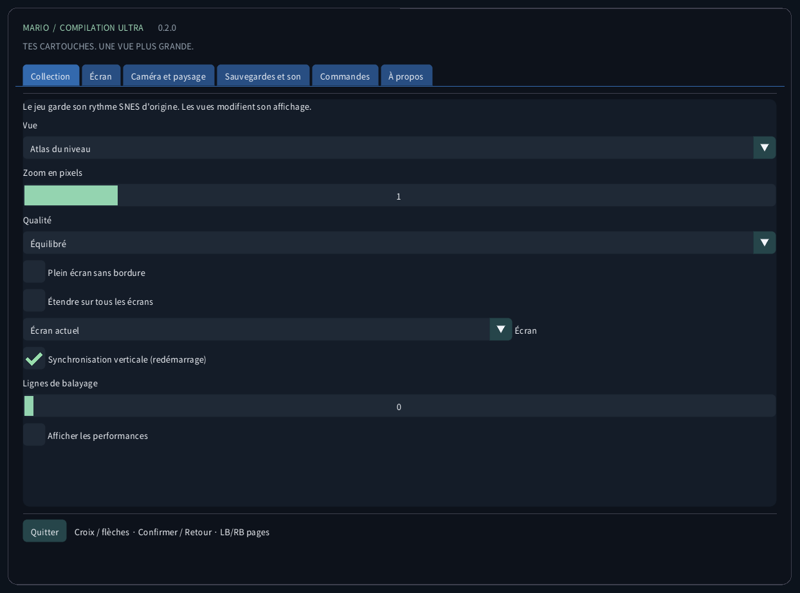
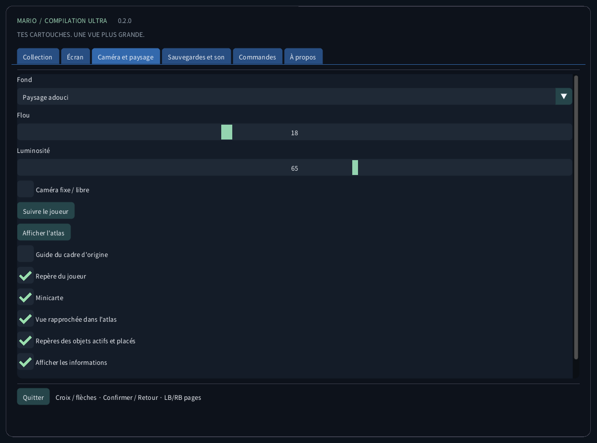
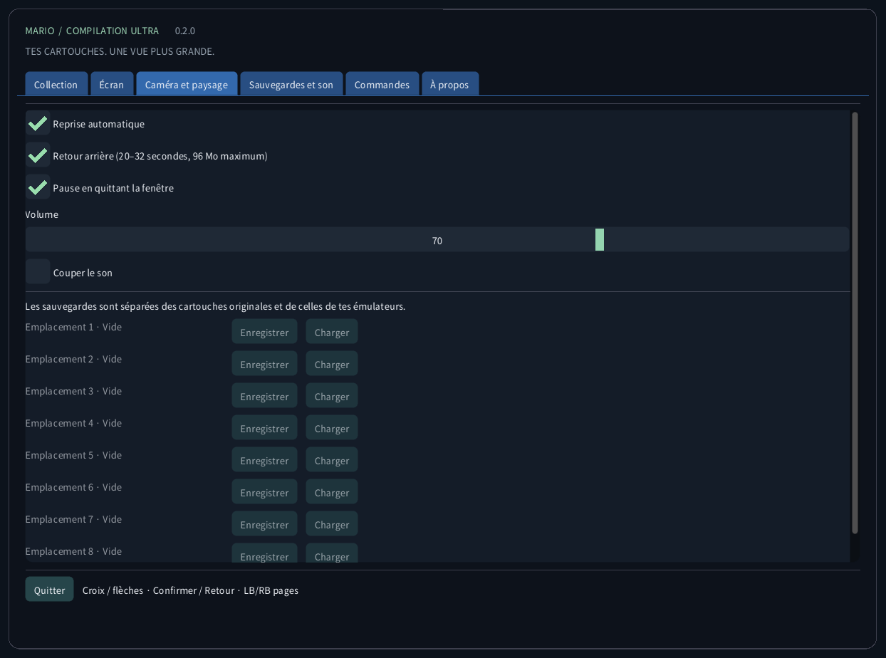
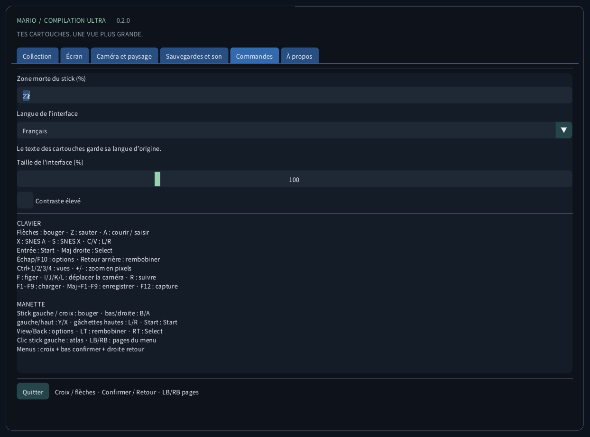
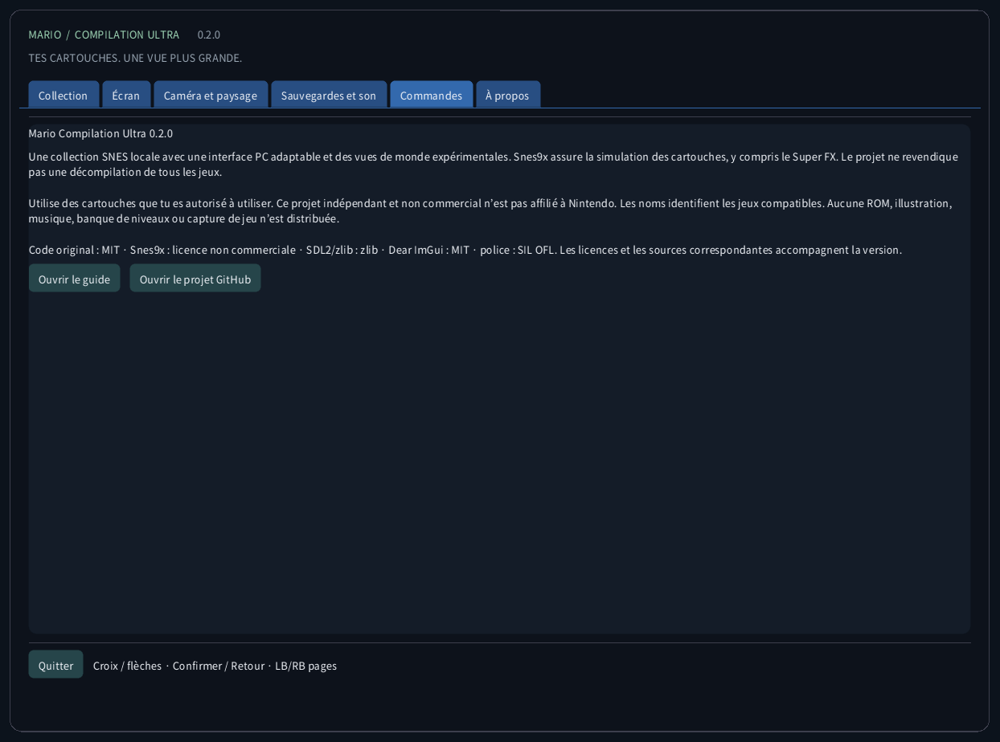

Mario Compilation Ultra 0.2.0
Une collection SNES locale avec une interface PC adaptable et des vues de monde expérimentales. Snes9x assure la simulation des cartouches, y compris le Super FX. Le projet ne revendique pas une décompilation de tous les jeux.
Téléchargement et lancement sur le bureauTéléchargement et lancement sur le bureau
- Télécharge le paquet pour ton ordinateur et extrais tout le ZIP. Garde ensemble l’exécutable, SDL, les ressources et les guides. Windows : ouvre MarioCompilationUltra.exe. Linux : lance Play.sh. Mac : ouvre l’application.
- Importe tes fichiers .sfc, .smc ou ZIP contenant une seule cartouche avec Choisir une cartouche, Importer un dossier ou un glisser-déposer. Le sélecteur ouvre le dossier local de l’application. Les cartouches compatibles déposées directement dedans sont détectées au prochain lancement.
- All-Stars + Super Mario World fournit Mario Bros. 1, Mario Bros. 2 USA, Mario Bros. 3, World et The Lost Levels. Ajoute Yoshi’s Island séparément. Choisis Jouer, puis Entrée ou Start sur l’écran titre d’origine ; appuie à nouveau si une démo est en cours.
Windows : lance Install-Windows.ps1 pour copier le paquet complet dans ton dossier Programs et créer le raccourci du bureau. Linux : lance Install-Linux.sh pour inscrire ce dossier portable dans le menu et sur le bureau. Mac : déplace l’application dans Applications et crée un alias sur le bureau. Conserve le dossier portable choisi.
Windows: powershell -NoProfile -ExecutionPolicy Bypass -File .\Install-Windows.ps1 Linux: sh ./Install-Linux.sh

Paquets et validation
- Windows x64 : lancement réel sur le bureau et exécution de cartouches vérifiés ; tests automatiques également.
- Linux x64 : compilation et contrôles sans ROM automatisés. Jeu sur un poste Linux physique non testé.
- macOS Intel x64 et Apple Silicon arm64 : EXPÉRIMENTAL, NON TESTÉ SUR UN MAC PHYSIQUE. Les contrôles automatiques couvrent la compilation et l’interface sans ROM. Signature ad hoc, sans notarisation ; manette, son, graphismes et Gatekeeper restent à vérifier sur un vrai Mac.
Modes de vue

L’atlas de World couvre la zone actuellement chargée, pas toutes les zones du jeu à la fois. Mario 1, Lost Levels, Mario 2, Mario 3 et les scènes ordinaires de Yoshi construisent une carte du terrain observé en avançant. Les zones inconnues restent hachurées. Hors du cadre d’origine, effets et sprites peuvent différer. Les projections spéciales reviennent à l’image d’origine.
Les profils mémoire étendus et la sélection All-Stars automatique visent les éditions américaines listées. Une édition reconnue sans profil vérifié utilise le cadrage d’origine. Traduire l’interface ne traduit pas l’histoire ou les graphismes de la cartouche commerciale. Le projet ne revendique pas une nouvelle décompilation native des cinq jeux.
| CRC32 | SNES |
|---|---|
f84305b1 | All-Stars + World (US) |
925637c7 | All-Stars (US) |
b19ed489 | Super Mario World (US) |
d138f224 | Yoshi’s Island 1.0 (US) |
cf98ddaa | Yoshi’s Island 1.1 (US) |
Commandes
CLAVIER Flèches : bouger · Z : sauter · A : courir / saisir X : SNES A · S : SNES X · C/V : L/R Entrée : Start · Maj droite : Select Échap/F10 : options · Retour arrière : rembobiner Ctrl+1/2/3/4 : vues · +/- : zoom en pixels F : figer · I/J/K/L : déplacer la caméra · R : suivre F1–F9 : charger · Maj+F1–F9 : enregistrer · F12 : capture MANETTE Stick gauche / croix : bouger · bas/droite : B/A gauche/haut : Y/X · gâchettes hautes : L/R · Start : Start View/Back : options · LT : rembobiner · RT : Select Clic stick gauche : atlas · LB/RB : pages du menu Menus : croix + bas confirmer + droite retour
Sauvegardes et son
Chaque jeu a neuf emplacements manuels, une reprise automatique, la SRAM et un retour arrière limité. Le retour arrière utilise au plus 96 Mio pour environ 20–32 secondes. F1–F9 chargent ; Maj+F1–F9 enregistrent. Les états sont vérifiés par CRC de cartouche, version du moteur et intégrité. Les sauvegardes de tes autres émulateurs restent séparées.
Fichiers locaux
Ce dossier contient settings.ini, les références locales aux cartouches, states/, sram/ et screenshots/. L’importation n’envoie pas la cartouche et ne modifie pas le fichier original. Sauvegarde ce dossier avant de changer d’ordinateur. Les états dépendent de la cartouche exacte et du moteur ; la SRAM est un fichier séparé.
Windows: %APPDATA%/ValentinWittwe/MarioCompilationUltra/ Linux: ~/.local/share/ValentinWittwe/MarioCompilationUltra/ macOS: ~/Library/Application Support/ValentinWittwe/MarioCompilationUltra/
Si un jeu demande encore une importation
Choisis à nouveau la cartouche si son fichier a été déplacé ou si le disque est déconnecté. Le ZIP doit contenir un seul .sfc ou .smc, sans chiffrement, stocké ou compressé en DEFLATE. Vérifie les éditions et en-têtes pris en charge. Une police ou SDL manquante indique souvent que seul l’exécutable a été extrait ; extrais à nouveau tout le paquet.
Galerie de l’interface réelle
Ces captures viennent de l’application réelle sans cartouche chargée. Les schémas utilisent une géométrie illustrative originale, pas des graphismes de jeu. Les téléchargements publics ne contiennent aucune ROM Nintendo, sprite, musique, niveau extrait ou capture de partie.





Paquets et validation · 0.2.0
Les contrôles automatiques couvrent 63 assertions de moteur/manette, les 165 messages des dix catalogues, les glyphes et 240 captures réelles en quatre tailles. Les essais privés courts ne constituent pas une fin de tous les jeux. Le rapport détaillé et le workflow de chaque version distinguent le vérifié du matériel non testé.
CTest / CI · Report · Build